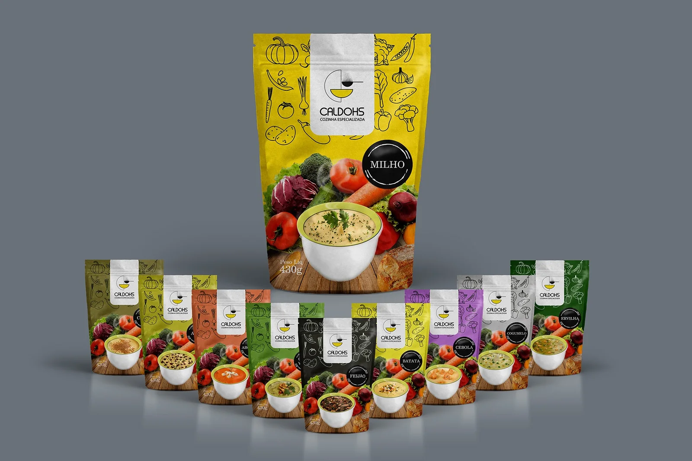
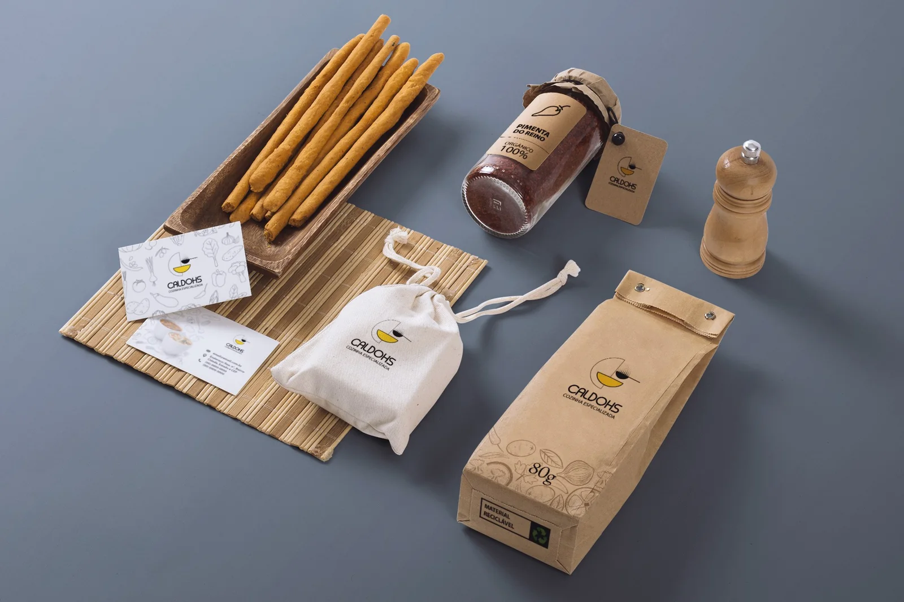
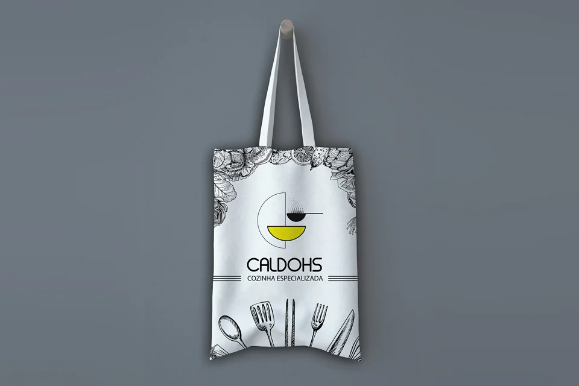
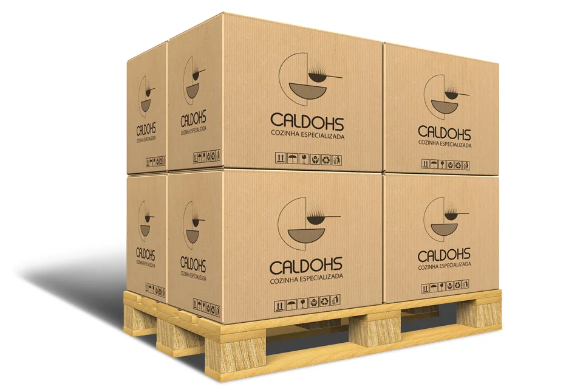
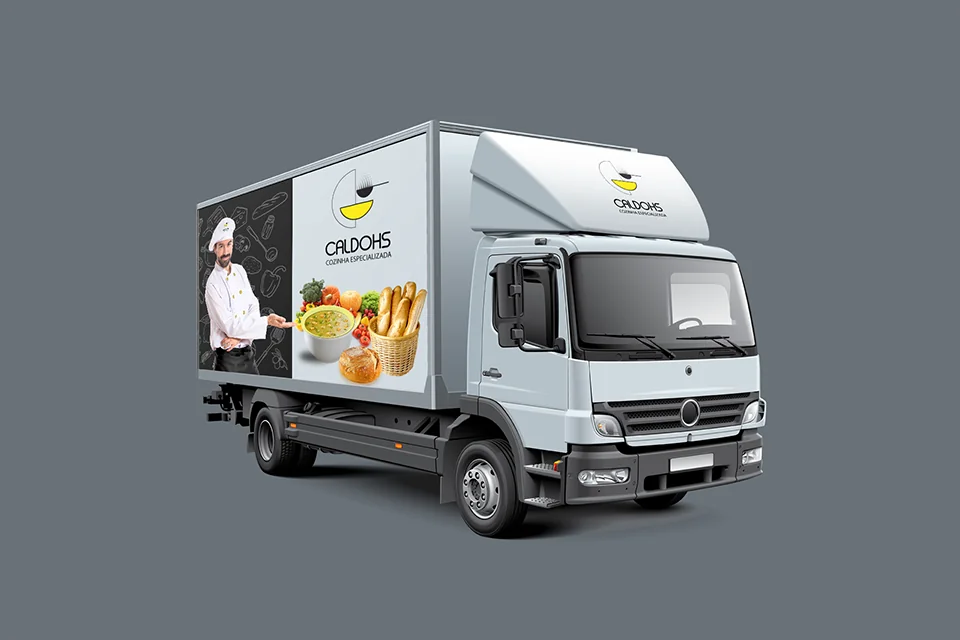
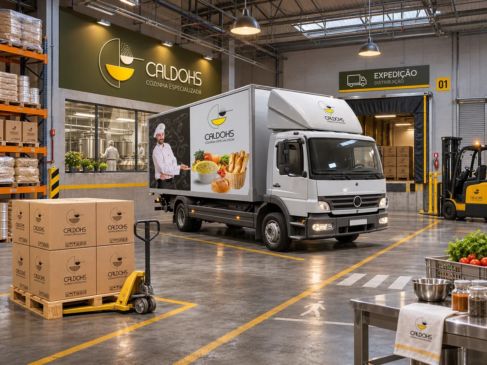

Caldohs
Do produto ao serviço: uma linha de caldos pensada como experiência integrada de escolha, preparo e consumo.





Sistema de embalagens Caldohs — portfólio de sabores, arquitetura visual e apresentação de produto.
Contexto
Na Caldohs, o objeto visível é uma linha de caldos em embalagens distintas, mas a oportunidade estratégica é maior: construir um serviço coerente em torno de um alimento de conveniência. A experiência começa na descoberta da marca, passa pela leitura da embalagem e pela escolha do sabor e se completa no preparo e no consumo.
A Caldohs se apresenta como uma marca de “cozinha especializada” dedicada a caldos, com portfólio de sabores e sistema visual consistente. As embalagens usam cores de diferenciação, fotografia de alimentos e informação do produto; a de 430 g de milho abre uma linha reconhecível como família.
- Setor
- Alimentação · caldos de conveniência
- Organização
- Caldohs (cozinha especializada)
- Período
- Não informado
- Meu papel
- Design de serviços · Discovery · Estratégia
Problema
Como alinhar a promessa da marca à experiência real de uso?
Para um alimento de preparo prático, o desafio não se restringe à qualidade percebida do design gráfico. É preciso comunicar o que está sendo comprado, distinguir variantes, inspirar confiança e alinhar a promessa da marca à experiência real de uso. Quando cada ponto de contato transmite expectativas diferentes, o serviço perde consistência antes mesmo do primeiro consumo.
Pergunta de pesquisa
Questão central
Como podemos desenhar uma proposta de alimentação prática e especializada que seja compreensível no momento da escolha, consistente nos diferentes sabores e relevante ao longo da jornada de consumo?
- Q.01Como tornar a proposta compreensível no momento da escolha?
- Q.02Como manter a consistência entre os diferentes sabores?
- Q.03Como manter a proposta relevante do preparo à recompra?
Partes interessadas
O ecossistema de referência reúne consumidores finais, responsáveis pela decisão de compra, pontos de venda ou canais comerciais, produção, abastecimento e atendimento.
A imagem mostra o backstage do serviço: produção, abastecimento e expedição. A participação efetiva de cada ator no projeto e o modelo de distribuição não foram documentados.

Produção · ExpediçãoBackstage do serviçoMetodologia
- 01
Entender - 02
Explorar - 03
Conectar - 04
Projetar - 05
Validar
| Método | Objetivo | Base de análise | Etapa |
|---|---|---|---|
| Proposta de valor | Definir o que a linha de caldos promete ao consumidor | Marca e assinatura “cozinha especializada” | Entender |
| Jornada do consumidor | Mapear os momentos de escolha, preparo e consumo | Da descoberta da marca à recompra | Explorar |
| Frontstage e backstage | Relacionar o que o consumidor vê ao que sustenta a oferta | Marca, embalagem e comunicação · portfólio, preparo, padronização e disponibilidade | Conectar |
| Arquitetura de portfólio | Organizar os sabores como uma família reconhecível | Sistema de cores, rótulos e fotografia | Projetar |
A leitura das embalagens permite discutir esses componentes, mas não comprova que entrevistas, shadowing, testes de degustação ou service blueprints tenham sido realizados.
Pesquisa
10
Embalagens de sabor na linha apresentada
430 g
Peso líquido por embalagem
8
Aplicações da marca
5
Temas de pesquisa
As perguntas de pesquisa mais importantes são: em que ocasiões o caldo é consumido? Como se escolhe o sabor? O que o consumidor entende por conveniência? Que informações considera essenciais e que sinais lê como qualidade? Também interessa saber que expectativas a embalagem cria e em que pontos o preparo ou a compra poderiam quebrar essa promessa.
Os números descrevem o material apresentado. Sem registros de campo, as perguntas permanecem como agenda investigativa; entrevistas, horas de campo e participantes não foram informados.
Evidências
“Cozinha especializada”
E.01 — Assinatura da marca
“Milho” · “Peso Líq 430g”
E.02 — Embalagem principal
Cada sabor tem a sua cor; logo, ilustrações e fotografia mantêm a mesma posição em todas as embalagens
E.03 — Observação · sistema de embalagens
“Feijão”, “Batata”, “Cebola”, “Cogumelo”, “Ervilha”
E.04 — Rótulos de sabor
“Pimenta do Reino · Orgânico 100%” e “Material reciclável”
E.05 — Embalagens kraft
A marca aplicada em papelaria, ecobag, caixas de transporte e caminhão de entrega
E.06 — Observação · pontos de contato
A repetição consistente desses elementos revela uma arquitetura de portfólio. Não há evidência disponível sobre preço, vendas, canais ativos ou satisfação do consumidor.
Descobertas
- I.01
A diferenciação não está apenas em vender um caldo, mas em reduzir o esforço de escolher e compreender o produto.
Evidências · E.02 · E.04
- I.02
A unidade visual com diferenças claras de sabor equilibra o reconhecimento da marca e a navegação pelo portfólio.
Evidências · E.03 · E.04
- I.03
O produto físico funciona como a principal interface de um serviço alimentar.
Evidências · E.01 · E.06
Jornada / Ecossistema
Curva ilustrativa da experiência esperada, sem dados medidos. Os pontos de contato visíveis são a marca, as embalagens e as aplicações em transporte; aquisição, preparo e pós-consumo dependem de evidências adicionais.
Oportunidades
- O.01 · I.01
Como podemos estruturar mensagens específicas para cada ocasião de consumo?
- O.02 · I.01
Como podemos padronizar as instruções de preparo e conservação?
- O.03 · I.03
Como podemos conectar a embalagem a canais digitais e criar experiências de descoberta do portfólio?
- O.04 · I.02
Como podemos manter a coerência entre disponibilidade dos sabores, informação sobre ingredientes e atendimento?
Impacto
10
Embalagens com identidade e arquitetura visual comuns
8
Aplicações da marca, do produto à entrega
O material comprova uma linha de produtos com identidade e arquitetura visual aplicadas a múltiplas embalagens e a pontos de contato que vão da papelaria ao transporte. É um resultado concreto de tangibilização da oferta: a promessa de “cozinha especializada” ganha uma forma reconhecível em cada sabor.
Adoção comercial, desempenho financeiro e validação com consumidores não foram documentados.
Entregáveis
- ENT.01
Linha de embalagens stand-up para dez sabores, com sistema de cores por variante
Formato · embalagem · Produção não informada
- ENT.02
Identidade visual “Caldohs · Cozinha especializada”, com ilustrações de ingredientes
Formato · identidade visual · Implantação não informada
- ENT.03
Aplicações da marca: papelaria, embalagens kraft, ecobag, caixas de transporte e caminhão
Formato · pontos de contato · Implantação não informada
Recomendação
| Frente | Recomendação | Indicador | Base |
|---|---|---|---|
| F1 | Manter uma hierarquia clara entre marca, sabor e atributos essenciais | Compreensão do portfólio e preferência por variante | O.01 · I.02 |
| F2 | Avaliar a leitura da embalagem em contexto real de compra | Conversão no ponto de venda | O.03 · I.01 |
| F3 | Documentar a jornada de ponta a ponta, do preparo à recompra | Recompra e percepção de qualidade | O.02 · O.04 |
Se houver comercialização, esses indicadores mostram se a clareza da embalagem se converte em escolha, recompra e percepção de qualidade.
Aprendizados
O que aprendi
O Service Design ajuda a enxergar a embalagem como parte de uma sequência de interações.
O que levo adiante
Uma promessa visual só se torna experiência de marca quando a escolha, a entrega do produto, o preparo e o consumo contam a mesma história.